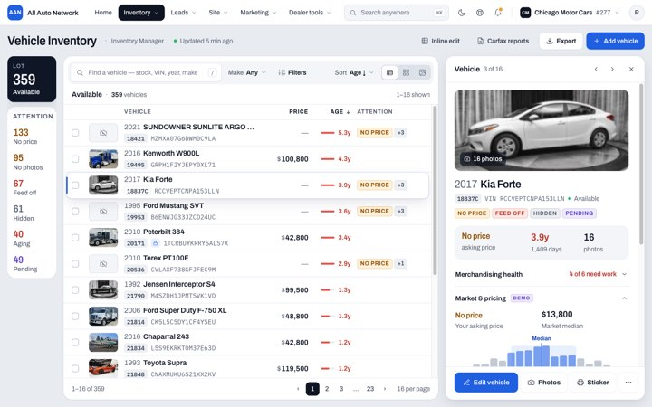
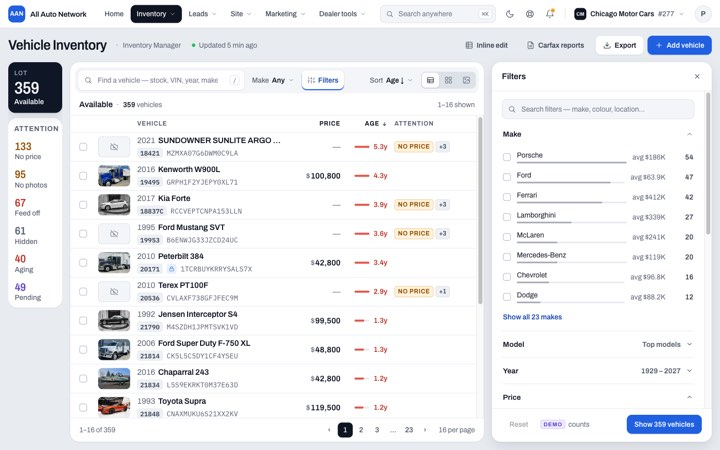
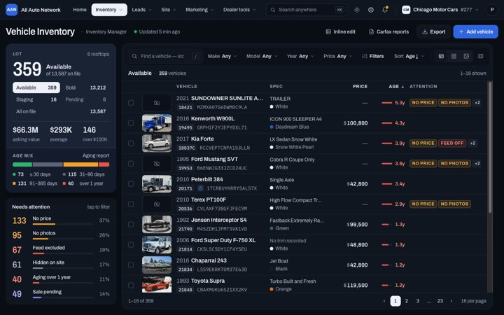
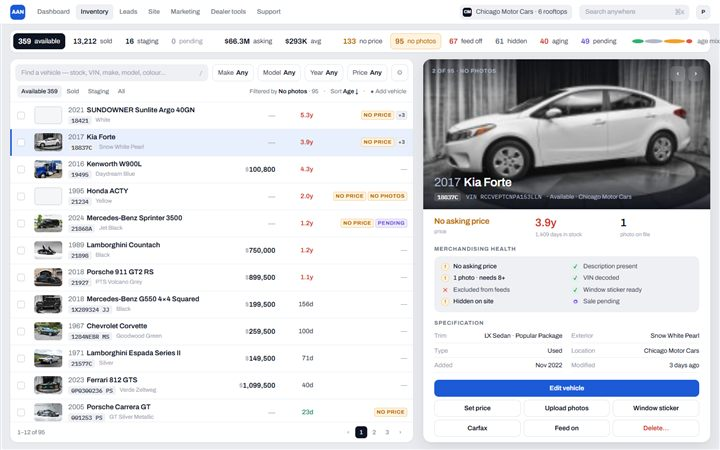
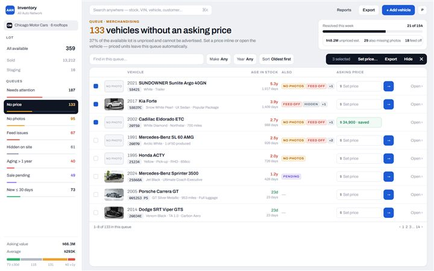

AAN Reseller — All Vehicles redesignDealer UI · Chicago Motor Cars #277 · every generation, live and static, 1440 light
Leading direction

Keeps the Gen 7 architecture — Lot column · Field · adaptive Dock — and replaces the rail with AAN's permanent top navigation plus a page title row. The Lot column gains width and scale. Filters become a facet accordion with counts and histograms; the vehicle inspector gains Market & pricing, Recent comps and History. Light and dark both designed.

inspector · market & pricing
filters with facet counts
dark theme{kind=link}
{kind=link}
{kind=link}
{kind=link}
Source of truth

Static 1440 capture of the real page, Available lane, 359 vehicles. Functional specification for every redesign.
Earlier generations — evidence, kept exactly as reviewed

Consolidated the old page but demoted inventory intelligence to a strip. Rejected for product hierarchy. Archived with its DS v0.1 and compare lab.
{kind=link}

Three visible jobs (understand / find / act), attention matrix, bulk bar. Zoning worked; the dark slab and matrix were superseded.
{kind=link}

Commercial-product polish on the ref2 hierarchy; attention as a five-slot strip. Judged still too close to upgraded admin.
{kind=link}

Introduced the row anatomy and NO PRICE / NO PHOTOS / FEED OFF tags that carried forward, plus a tinted intelligence zone.
{kind=link}

First rail-based workspace and the first contextual vehicle inspector — the inspector idea was approved and carried into Gen 7.
{kind=link}
Gen 6 — structural breakout (three concepts, rejected as exercises)

Intelligence objects beside the work; selected vehicle lifts out of the list in place.

Dense browser left, persistent vehicle inspector right, intelligence as a filter ribbon.

Operational lenses as navigation; the list is a queue shaped by the active lens.
Gen 7 — the workspace architecture Gen 8 keeps

No analytics band; intelligence in a persistent Lot column; the inspector docks and the Lot column collapses to a gauge strip. Right as architecture, too small and utilitarian in execution — Gen 8 replaces the rail with the top bar and redraws the scale.
{kind=link}
{kind=link}
{kind=link}